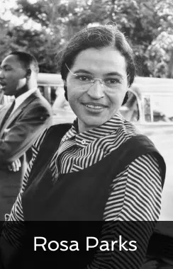

Galerie du féminisme
Emma Watson est une actrice britannique née le 15 avril 1990 et est devenue mondialement connue grâce au rôle de Hermione Granger dans la saga Harry Potter. L’actrice à également fait de nombreuses interventions féministe, participé à de nombreux évennement pour l’égalité homme-femme, etc…
Elle a également été nommée Ambassadrice de bonne volonté d’ONU Femmes et a participé aux campagnes CAMFED et HeForShe de l’ONU.
Rosa Parks est née le 4 février 1913 en Alabama et est décédée le 24 octobre 2005 à 92 ans, dans le Michigan. Elle est une militante des droits civiques et pour les droits de la personne humaine, elle a lutté pendant de nombreuses années contre la ségrégation raciale. En 1955 Rosa Parks a refusé de céder sa place à une
femme blanche dans un bus, cela lui a value une amende et c’est par la suite qu’elle a engagé sa lutte pour la défense des droits civiques.
Olympe de Gouges, de son vrai nom Marie Gouze, est née le 7 mai 1748 et exécutée le 3 novembre 1793 à 45 ans, en France est une écrivaine, philosophe, journaliste et femme politique. Mais elle est surtout l’une voire la plus grandes figures du féminisme en France, elle a rédigé de nombreux écrit en faveur des
droits de la femme dont la Déclaration des droits de la femme et de la citoyenne en 1791.